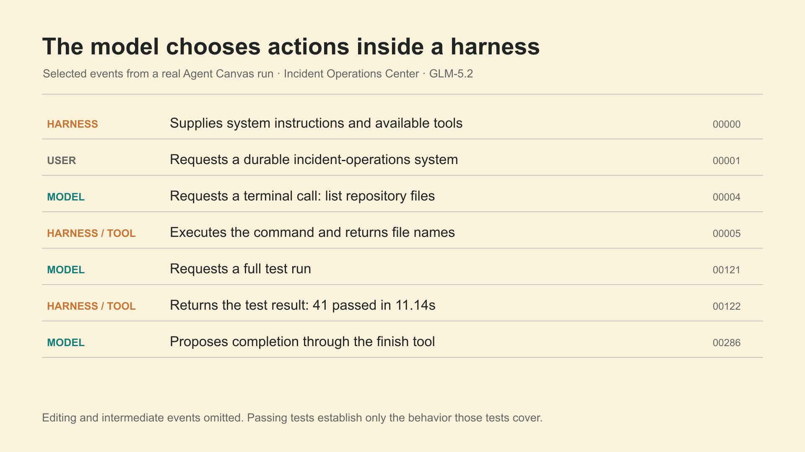
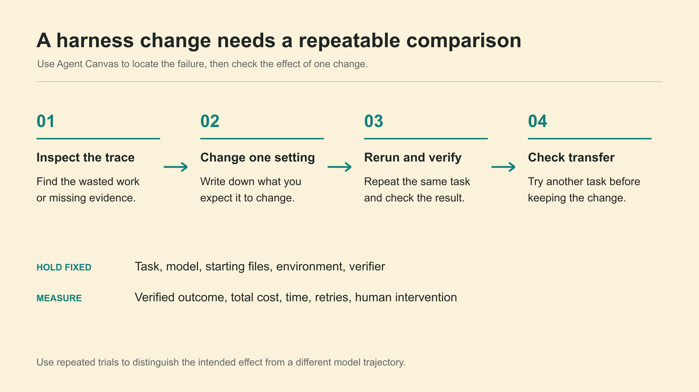
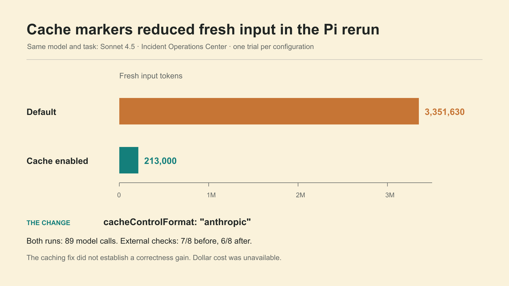
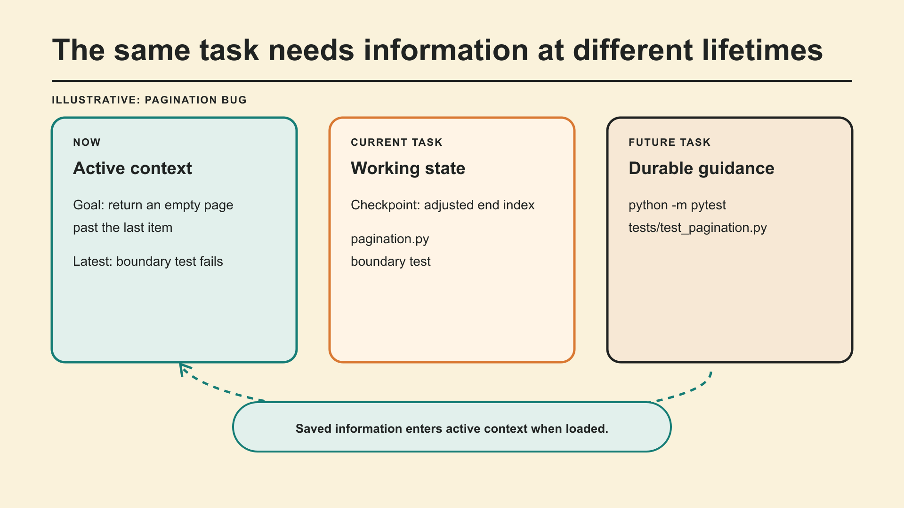
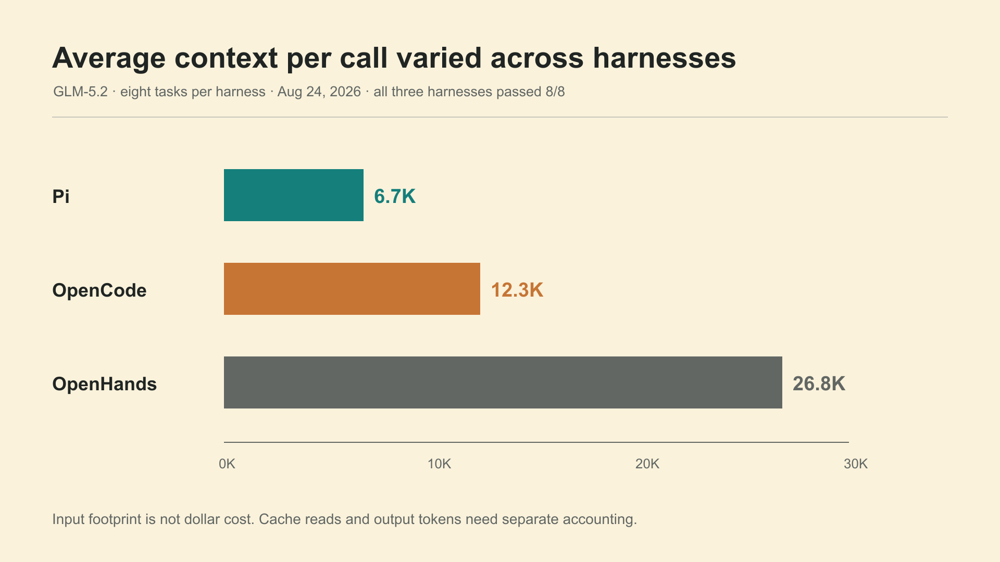
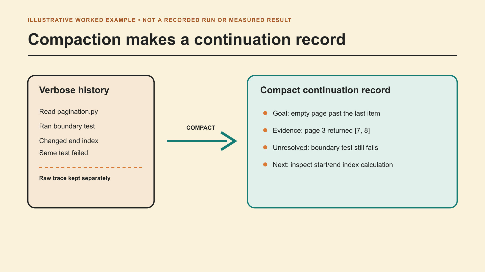

ODSC: Agent Canvas teaching visuals
Six new visuals for review. Each image has an editable SVG and Excalidraw source.
1. Read a real Agent Canvas run
Opening, immediately after source 004. Selected recorded events show model decisions and harness execution.

{kind=link}
{kind=link}
2. Test one harness change
End of Workshop 1. Reuse this method and measurement vocabulary throughout the course.

{kind=link}
{kind=link}
3. Pi cache-control experiment
End of Workshop 1. A measured before/after configuration change; the quality results are separate trajectories.

{kind=link}
{kind=link}
4. Place information by lifetime
Source 042. An illustrative pagination task spans active context, working state, and reusable guidance.

{kind=link}
{kind=link}
5. Compare the observed context footprint
Replaces the context-budget placeholder with measured totals. A component breakdown is still pending.

{kind=link}
{kind=link}
6. Inspect a continuation record
Replaces the summarization placeholder with a worked example. Clearly marked illustrative.

{kind=link}
{kind=link}